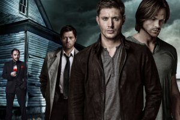

Появились подробности 12 сезона

Перед тем, как появилась официальная информация о том, что сериал продлен еще на один сезон, в сети можно было встретить массу слухов и споров о необходимости съемок продолжения. Слишком много мнений гласило о том, что сериал уже пуст на идеи и нужно закрыть его до того момента, когда качество начнет падать вместе с рейтингами. Либо нужно основательно подумать над сценарием.
На самом деле, армия поклонников захотела продолжения. Но столько идей уже было использовано, что закрадываются сомнения о безграничности фантазии сценаристов. И это при том, что они менялись достаточно часто за весь период съемок.
Чем порадует новый сезон?
Сценаристы прозрачно намекают, что одним из заглавных ходов в сюжете станут возвращения различных персонажей из прошлых сезонов. Также хотят вернуться к теме первых сезонов, когда братья путешествовали и у них появлялись абсолютно случайные дела, они ввязывались в странные истории по дороге.
С другой стороны, один из противников Винчестеров уже предсказан – Темнота. Конечно, с ней и придется разбираться в будущем сезоне.
Один из сценаристов позволил себе приоткрыть немного сюжет нового сезона и рассказал небольшие подробности о первой серии, которая получила название «Малышка». Весь эпизод был снят прямо в салоне автомобиля Импала. Обычно съемки касаются сюжетов вне машины, но в этот раз камера задержалась здесь надолго. Режиссеру показался интересным такой ход, где можно понаблюдать за главными героями не выходя из автомобиля, подслушать их разговоры.
Эклз и вовсе назвал этот эпизод очень волнительным. Он даже вспомнил фильм «Лок». Для него оказалось неожиданным, что 90 минут, проведенные в автомобиле могут быть такими напряженными и волнующими. Тем более, что после «Лока» повторить это ощущение, достигнуть планки достаточно сложно.
А что дальше?
Владельцы телеканала много раз повторяли, что новый сезон снимается только потому, что сериал имеет достаточно высокую популярность среди зрителей. И решение о съемке 12 сезона находятся в весьма шатком положении. Однако, совсем недавно президент канала заявил, что при условии сохранения рейтингов настолько же высоких, сериал может получить продолжение еще на один сезон.
Обычно о таком решении объявляют весной, когда имеются предварительные наброски графика выходов эпизодов, а также расписываются каникулы актеров. Но в этом году такие ранние высказывания вселяют оптимизм и надежду на продолжение истории.